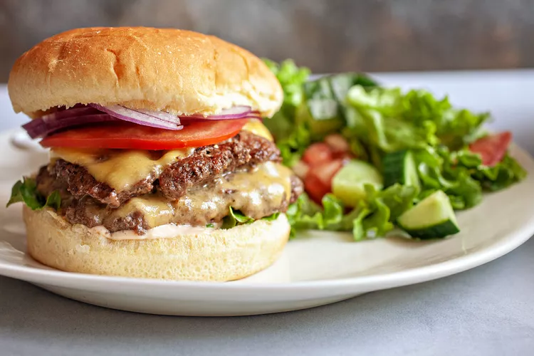

Cheeseburger

Description
In the summertime, I like nothing more than grilling some burgers outside with friends and family, but you should not have to wait for warmer weather to get your burger fix in.
These stovetop burgers can be made any time of the year, and I love them so much that I crave them even when the grill is an option!
Ingredients
- 20 to 24 ounces ground beef (90/10)
- 1 teaspoon kosher salt
- 1 teaspoon freshly ground black pepper
- 1/4 teaspoon garlic powder, optional
- 2 teaspoons extra virgin olive oil
- 4 to 8 slices American cheese
- 4 hamburger buns
- Fresh lettuce
- Slices tomato
- red onion
Steps
- Make the burger sauce
- Make the burger patties
- Add the patties to the pan and press
- Cook the patties
- Assemble the burger
Home